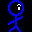
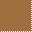
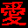

穴掘りWars 2 Flash
ゲーム
目的
君はよしおとなり、穴を掘り、梯子を上り、石を乗り越え愛を獲得するのだ！
遊び方
まぁやればわかります。
操作方法
- 移動：カーソルキー
- 何も無いところか、梯子は移動可能ですが、土や石の方向へは進めません。また、１マスなら落下できますが、２マス以上落下すると死んでしまいます。
- 石は一つだけなら真横に押すことができます。ハシゴは押せません。
- 穴を掘る：スペースキー(IMEがONになっていると認識されません)
- 主人公は向いている方向に怪光線を発射し、土を掘ることができます。
- 土を掘った時、掘った土の上の方に石があると、地滑りをおこします。
- 梯子の下を掘ると梯子は落下します。ただし、梯子と穴の間に土があれば梯子は落下しません。
- やり直し：エスケープキー
- ゲーム中いつでも「エスケープキー」を押せばそのステージをやり直すことができます。 また、死んだときにもスペースキーかエスケープキーを押せばそのステージをやり直せます。
- コンテニュー：ありません
- 「コンテニュー」とか「続きから」が欲しいとか言ってる人には愛なんて獲得できんのです。えらい人にはそれがわからんのです。
- 死亡回数制限、時間制限などはありません。ゆっくり何度でも挑戦してください。
キャラクター
- 
- 主人公です。目から怪光線を出して土を溶かすことができます。 愛に飢えていおり、いつも愛を探しています。
- 
- 土です。怪光線で溶かすことができます。
- 頑丈なハシゴです。登ることができます。ハシゴの上に石があってもびくともしません。ハシゴの真下を掘ると梯子が落ちてきます。 ハシゴは押せません。
- 重い石です。つねに土かハシゴに支えられている状態になっています。 石の下に空白ができると地滑りをおこして落ちてきます。 重いので一度に一つしか押せません。
- 
- 愛です。 愛にたどり着けばクリアです。
謝辞
サウンド関連は以下のサイトの素材を利用させていただいております。